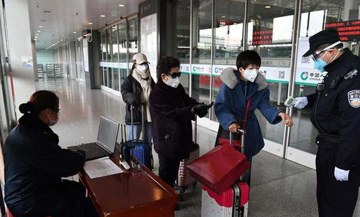
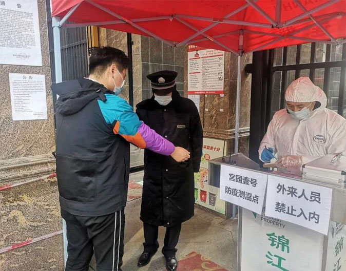
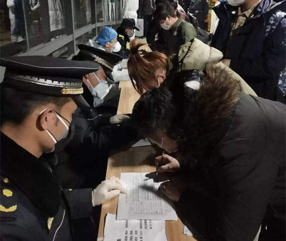
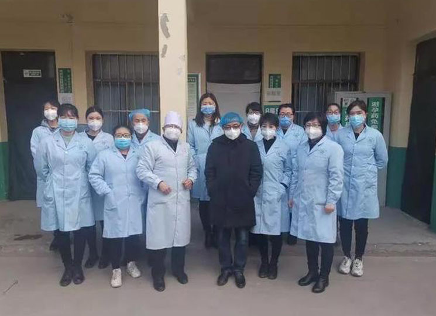

防疫动态

31个省(自治区、直辖市)和新疆生产建设兵团报告新增本土病例65例(天津33例，其中津南区32例、西青区1例；河南29例，其中安阳市15例、许昌市7例、郑州市7例；北京1例，在海淀区；广东1例，在珠海市；陕西1例，在西安市)，含6例由无症状感染者转为确诊病例(均在天津)。无新增死亡病例。新增疑似病例9例，均为境外输入病例(均在上海)。
陕西西安市召开疫情防控新闻发布会，介绍疫情防控最新情况。西安市疫情防控指挥部办公室副主任、市政府副秘书长张峰虎介绍， 1月10日以来，西安已实现社会面病例零发生。疫情已经进入了收尾阶段。陕西省新增报告本土确诊病例1例(在西安市，隔离管控发现)，治愈出院61例。据西安发布消息，截至1月16日，碑林区柏树林街道、高新区五星街道、西咸新区沣东新城上林街道、西咸新区秦汉新城渭城街道近14天内无新增本地病例和聚集性疫情。
最新情况
经西安市新冠肺炎疫情防控指挥部同意，自2022年1月16日起，将碑林区柏树林街道、高新区五星街道、西咸新区沣东新城上林街道、西咸新区秦汉新城渭城街道由中风险地区调整为低风险地区，其他地区风险等级不变。调整后，截至2022年1月16日，西安市共有高风险地区1个，中风险地区17个。西安全市其他地区均为低风险地区。
陕西西安市召开疫情防控新闻发布会，介绍疫情防控最新情况。西安市疫情防控指挥部办公室副主任、市政府副秘书长张峰虎介绍，截至1月15日24时，本轮疫情累计报告本土确诊病例2044例。1月10日以来，西安已实现社会面病例零发生。1月11日至1月15日，新增本土确诊病例分别为8例、6例、8例、4例、1例，均在集中隔离和闭环管理人员中发现，疫情已经进入了收尾阶段。
发布会介绍，西安高新区2家医院将对透析、孕产妇等患者提供连续医疗服务，将进一步做好高新区2家医院在院患者和长期建档患者的医疗服务：对在院患者按照已制定的治疗方案，持续做好后续诊疗服务；对长期血液透析。
疫情防控


